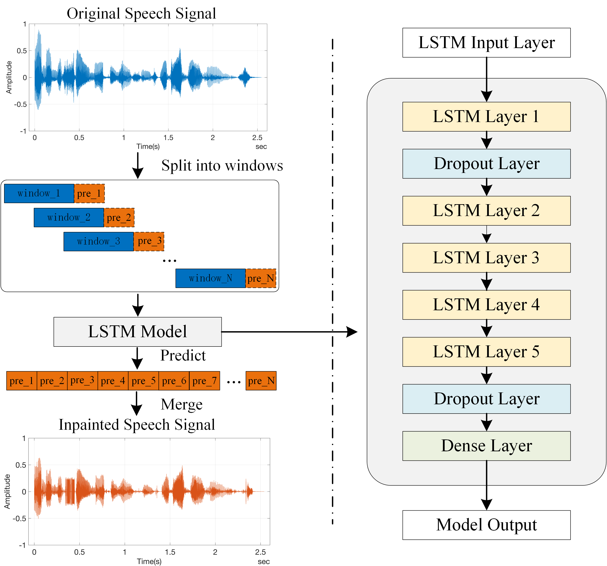

This website presents our solution for the speech inpainting using Long Short-Term Memory (LSTM) networks. We designed multi-layer LSTM networks and trained them with two types of speech datasets, which correspond to four single-speaker and four multi-speaker datasets. Our study aims to investigate the inpainting performance of the proposed models on the different datasets and varying LSTM layers, so as to explore the effect of multi-layer LSTM networks on the prediction of speech samples in terms of perceived audio quality. The inpainted speech quality is evaluated through the Mean Opinion Score (MOS) and frequency analysis of spectrogram.
In this web page we will examine the performance of the proposed models on the different datasets and learn the performance of the models on the different layers and the different LSTM layers using different strategies.
2 Inpainting process and Model architecture
The speech inpainting progress and model architecture are shown in Figure 1, the left side of the figure shows the speech inpainting process and the right side shows the structure of the LSTM model, note that only a 5-layer LSTM model is exhibited.

Figure 1 - The speech inpainting process and network structure of the proposed LSTM model.
The orange blocks labelled with pre_i on the right side indicate the predicted parts of the speech, i.e., the inpainted speech. Note that the orange blocks have two border types, the solid line and the dashed line. The dashed line only represents the position relationship between the inpainted signals and window_i, and the solid line represents the inpainted results.
3 Inpainting results
3.1 Single-speaker Datasets
The context of the auido signal is as follows, note that the gap is started from 1.62 seconds and lasted for 1000ms, 500ms, 200ms, 100ms, 50ms, 40ms and 20ms respectively.
Original Context: No, it’s no use, I can never, never forgive you, and it’s all over.
Zeroed Context(gap=1000ms): No, it’s no use, I can never, never forgive you, and it’s all over.
Zeroed Context(gap=500ms): No, it’s no use, I can never never forgive you, and it’s all over.
Zeroed Context(gap=200ms): No, it’s no use, I can never, never forgive you, and it’s all over.
Zeroed Context(gap=100ms): No, it’s no use, I can never, never forgive you, and it’s all over.
Zeroed Context(gap=50ms): No, it’s no use, I can never, never forgive you, and it’s all over.
Zeroed Context(gap=40ms): No, it’s no use, I can never, never forgive you, and it’s all over.
Zeroed Context(gap=20ms): No, it’s no use, I can never, never forgive you, and it’s all over.
Gap length = 1s
Figure 2 - The inpainting results of Original signal, Signal with gap(1000ms) and Inpainted signal in time and frequency domain from top to bottom.
Original signal
Zeroed signal (Signal with gap)
Inpainted signal
Gap length = 500ms
Figure 3 - The inpainting results of Original signal, Signal with gap(500ms) and Inpainted signal in time and frequency domain from top to bottom.
Original signal
Zeroed signal (Signal with gap)
Inpainted signal
Gap length = 200ms
Figure 4 - The inpainting results of Original signal, Signal with gap(200ms) and Inpainted signal in time and frequency domain from top to bottom.
Original signal
Zeroed signal (Signal with gap)
Inpainted signal
Gap length = 100ms
Figure 5 - The inpainting results of Original signal, Signal with gap(100ms) and Inpainted signal in time and frequency domain from top to bottom.
Original signal
Zeroed signal (Signal with gap)
Inpainted signal
Gap length = 50ms
Figure 6- The inpainting results of Original signal, Signal with gap(50ms) and Inpainted signal in time and frequency domain from top to bottom.
Original signal
Zeroed signal (Signal with gap)
Inpainted signal
Gap length = 40ms
Figure 7 - The inpainting results of Original signal, Signal with gap(40ms) and Inpainted signal in time and frequency domain from top to bottom.
Original signal
Zeroed signal (Signal with gap)
Inpainted signal
Gap length = 20ms
Figure 8 - The inpainting results of Original signal, Signal with gap(20ms) and Inpainted signal in time and frequency domain from top to bottom.
Original signal
Zeroed signal (Signal with gap)
Inpainted signal
MOS
MOS(NB) and MOS(WB) are shown below (single-speaekr).
MOS
20ms
40ms
50ms
100ms
200ms
500ms
1000ms
MOS_NB
4.31
4.28
4.27
4.22
4.12
4.00
3.66
MOS_WB
4.42
4.41
4.40
4.36
4.23
4.00
2.58
3.2 Multi-speaker Datasets
The context of the auido signal is as follows, note that the gap is started from 2.88 seconds and lasted for 1000ms, 500ms, 200ms, 100ms, 50ms, 40ms and 20ms respectively.
Original Context: Then we’ll run home together sometimes he saw her hand stretched out to find his own
Zeroed Context(gap=1000ms): Then we’ll run home together sometimes he saw her hand stretched out to find his own
Zeroed Context(gap=500ms): Then we’ll run home together sometimes he saw her hand stretched out to find his own
Zeroed Context(gap=200ms): Then we’ll run home together sometimes he saw her hand stretched out to find his own
Zeroed Context(gap=100ms): Then we’ll run home together sometimes he saw her hand stretched out to find his own
Zeroed Context(gap=50ms): Then we’ll run home together sometimes he saw her hand stretched out to find his own
Zeroed Context(gap=40ms): Then we’ll run home together sometimes he saw her hand stretched out to find his own
Zeroed Context(gap=20ms): Then we’ll run home together sometimes he saw her hand stretched out to find his own
Gap length = 1s
Figure 9 - The inpainting results of Original signal, Signal with gap(1000ms) and Inpainted signal in time and frequency domain from top to bottom.
Original signal
Zeroed signal (Signal with gap)
Inpainted signal
Gap length = 500ms
Figure 10 - The inpainting results of Original signal, Signal with gap(500ms) and Inpainted signal in time and frequency domain from top to bottom.
Original signal
Zeroed signal (Signal with gap)
Inpainted signal
Gap length = 200ms
Figure 11 - The inpainting results of Original signal, Signal with gap(200ms) and Inpainted signal in time and frequency domain from top to bottom.
Original signal
Zeroed signal (Signal with gap)
Inpainted signal
Gap length = 100ms
Figure 12 - The inpainting results of Original signal, Signal with gap(100ms) and Inpainted signal in time and frequency domain from top to bottom.
Original signal
Zeroed signal (Signal with gap)
Inpainted signal
Gap length = 50ms
Figure 13 - The inpainting results of Original signal, Signal with gap(50ms) and Inpainted signal in time and frequency domain from top to bottom.
Original signal
Zeroed signal (Signal with gap)
Inpainted signal
Gap length = 40ms
Figure 14 - The inpainting results of Original signal, Signal with gap(40ms) and Inpainted signal in time and frequency domain from top to bottom.
Original signal
Zeroed signal (Signal with gap)
Inpainted signal
Gap length = 20ms
Figure 15 - The inpainting results of Original signal, Signal with gap(20ms) and Inpainted signal in time and frequency domain from top to bottom.
Original signal
Zeroed signal (Signal with gap)
Inpainted signal
MOS
MOS(NB) and MOS(WB) are shown below (multi-speaekr).